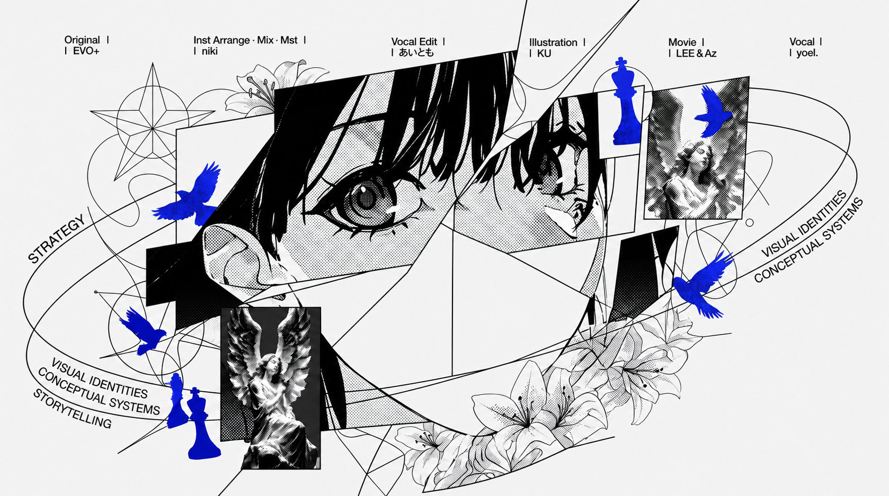

理论与实践 / THEORY AND PRACTICE / 理论与实践
结构、视觉与系统，在复杂问题中建立清晰路径

PROJECT:WEBSIGNART DIRECTION LAB

PROJECT:ZBIRD TEMUAUTOMATION EXTENSION

PROJECT:ZHIXUEDUAL LEARNING WORKSPACE

PROJECT:OVERSEAS WAREHOUSEOPERATIONS ARCHITECTURE
BACKGROUNDBACKGROUND COLOR THEORY